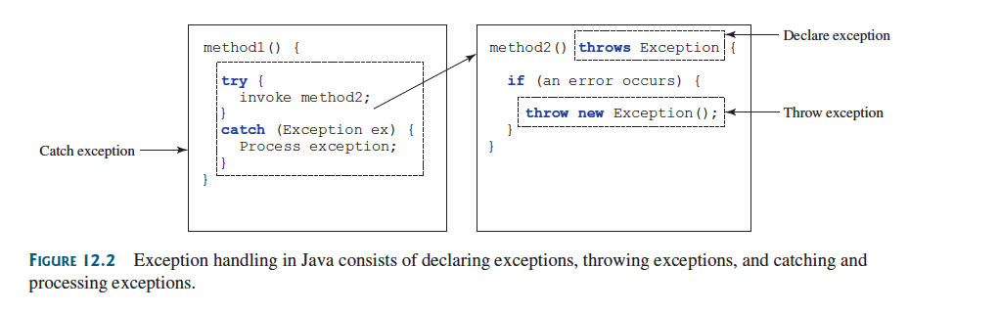

Declaring, Throwing and Catching Exceptions
Declaring, Throwing and Catching Exceptions
A handler for an exception is found by propagating the exception backward through a chain of method calls, starting from the current method.
Java’s exception-handling model is based on three operations:
- Declaring
- Throwing
- And Catching

Declaring Exceptions
In Java, the statement currently being executed belongs to a method.
The Java interpreter invokes the main method to start executing a program.
Every method must state the types of checked exceptions it might throw.
This is known as declaring exceptions.
Because system errors and runtime errors can happen to any code, Java does not require that you declare Error and RuntimeException (unchecked exceptions) explicitly in the method.
However, all other exceptions thrown by the method must be explicitly declared in the method header so the caller of the method is informed of the exception.
To declare an exception in a method, use the throws keyword in the method header.
Example
public void myMethod() throws IOException
The throws keyword indicates myMethod might throw an IOException.
If the method might throw multiple exceptions, add a list of the exceptions
public void myMethod() throws Exception1, Exception2, ..., ExceptionN
Throwing Exceptions
A program that detects an error can create an instance of an appropriate exception type and throw it.
This is known as throwing an exception.
Example
Suppose the program detects that an argument passed to the method violates the method contract (e.g., the argument must be nonnegative, but a negative argument is passed).
The program can create an instance of IllegalArgumentException and throw it:
IllegalArgumentException ex = new IllegalArgumentException("Wrong Argument"); throw ex;
OR
throw new IllegalArgumentException("Wrong Argument");
Note
IllegalArgumentException is an exception class in the Java API.
In general, each exception class in the Java API has at least two constructors: a no-arg constructor and a constructor with a String argument that describes the exception (Exception message).
Message can be obtained by invoking getMessage() from an exception object.
- The keyword to declare an exception is
throws, and the keyword to throw an exception isthrow.
Catching Exceptions
When an exception is thrown, it can be caught and handled in a try-catch block
Example
try { // Statements that may throw exceptions } catch (Exception1 exVar1) { // handler for excpetion1; } catch (Exception2 exVar2) { // handler for excpetion2; } // ... catch (ExceptionN exVarN) { // handler for excpetionN; }
If no exceptions arise during the execution of the try block, the catch blocks are skipped.
If one of the statements inside the try block throws an exception, Java skips the remaining statements and starts the process of finding the code to handle the exception.
The code that handles the exception is called the exception handler (found by propagating the exception backward through a chain of method calls, starting from the current method).
Each catch block is examined from first to last to see whether the type of the exception object is an instance of the exception class in the catch block.
If so, the exception object is assigned to the variable declared and the code in the catch block is executed.
If no handler is found, Java exits this method, passes the exception to the method’s caller, and continues the same process to find a handler.
If no handler is found in the chain of methods being invoked, the program terminates and prints an error message on the console.
The process of finding a handler -> catching an exception.